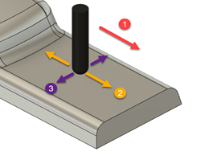

Vertical
Longitudinal et transversal = 0
1 - Direction de déplacement
2 - Direction d'inclinaison de l'angle longitudinal
3 - Direction d'inclinaison de l'angle transversal
Spécifie l'axe d'outil opérationnel pour l'usinage multi-axes.
Vertical: aligne l'outil avec l'orientation d'outil spécifiée.
Longitudinal et transversal: incline l'axe d'outil à l'aide d'angles longitudinaux et transversaux. Des angles de 0 degré alignent l'axe d'outil de sorte qu'il soit toujours perpendiculaire à la surface qu'il touche. L'angle longitudinal incline l'outil dans la direction de la coupe. L'angle transversal incline l'outil latéralement par rapport à la direction de la coupe. Utilisez ces angles par exemple afin d'éviter d'effectuer une coupe avec le centre d'une fraise hémisphérique.
Depuis une courbe: la pointe de l'outil s'incline à partir d'une courbe esquissée.
Vers une courbe: la pointe de l'outil vise une courbe esquissée.
Depuis un point: la pointe de l'outil s'incline depuis un point d'esquisse.
Vers un point: la pointe de l'outil vise vers un point d'esquisse.
|
 |
Vertical |
Longitudinal et transversal = 0 |